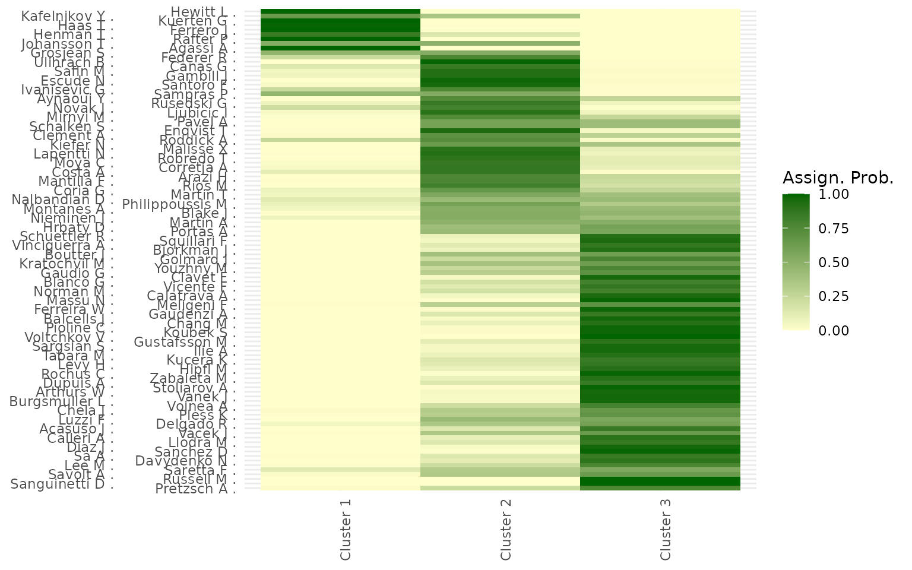

Post-processing and Summary Plots for BT-SBM
BTSBM authors
2025-09-16
Source:vignettes/Post_processing_BTSBM.Rmd
Post_processing_BTSBM.RmdOverview
This vignette shows a typical post-processing pipeline for Bayesian Bradley–Terry Stochastic Block Models (BT-SBM): - relabel posterior draws, - compute player-level skill summaries, - summarize uncertainty (entropy, cluster counts), - generate publication-ready plots.
It uses the package dataset ATP_2000_2022 for the head-to-head panels. Posterior draws come from a separate MCMC run (saved as an .rds file).
Data
first_year <- 1999
data(ATP_2000_2022, package = "BTSBM")
names(ATP_2000_2022)[1:3]
#> [1] "2000" "2001" "2002"
year_idx <- 1
str(ATP_2000_2022[[year_idx]], max.level = 1)
#> List of 3
#> $ Y_ij : num [1:105, 1:105] 0 0 1 1 1 1 0 0 0 1 ...
#> ..- attr(*, "dimnames")=List of 2
#> $ N_ij : num [1:105, 1:105] 0 2 2 4 3 3 1 1 0 1 ...
#> ..- attr(*, "dimnames")=List of 2
#> $ players_df: tibble [105 × 7] (S3: tbl_df/tbl/data.frame)Each yearly element contains:
- Y_ij, pairwise victory matrix
- N_ij, pairwise matches count matrix (105×105),
- players_df (105×7: player, worst_rank, median_rank, last_rank, age_year, ht_year, player_slug).
We use this structure to align player indices with posterior draws.
This is just a demo. The file contains just 200 iterations for the first two years. For a complete analysis, compile the file locally and obtain full results.
res_path <- system.file("extdata", "resGN_demo.rds", package = "BTSBM")
stopifnot(nzchar(res_path)) # helpful error if missing
res_list <- readRDS(res_path)Cross-season summaries
We iterate seasons, relabel draws, compute entropy and skill summaries, and collect the posterior for the number of blocks.
top_block_counts_across_years <- tibble(season = character(), avg_top_block_cnt = numeric())
prob_assignment_across_years <- tibble()
post_numb_block_across_years <- tibble(season = character(), num_blocks = integer(), count = integer(), prob = numeric())
avg_strength_each_player <- tibble()
entropy_per_season <- tibble(season = character(), quantile005 = numeric(),
quantile095 = numeric(), mean_entropy = numeric())
for (yr in seq_along(res_list)) {
season_label <- paste0(first_year + yr, "/", first_year + yr + 1)
res_i <- res_list[[yr]]
x_samples <- res_i$x_samples
lambda_samples <- res_i$lambda_samples
inf_i <- inference_helper(x_samples, lambda_samples)
x_relabeled <- inf_i$x_samples_relabel
lambdas_reordered <- inf_i$lambda_samples_relabel
T_iter <- nrow(lambdas_reordered)
n_players <- ncol(lambdas_reordered)
# player-level λ (geometric mean normalization by unique λ's per draw)
pl_lambda <- matrix(0, nrow = T_iter, ncol = n_players)
entropy_container <- numeric(T_iter)
for (i in 1:T_iter) {
x_cur <- x_relabeled[i, ]
p1 <- mean(x_cur == 1); p2 <- 1 - p1
entropy_container[i] <- -sum(c(p1, p2) * log(c(p1, p2) + 1e-10))
lambda_cur <- lambdas_reordered[i, ]
unique_lambdas <- unique(lambda_cur)
new_unique_lambdas <- unique_lambdas / (prod(unique_lambdas)^(1 / length(unique_lambdas)))
pl_lambda[i, ] <- new_unique_lambdas[x_cur]
}
HPD_entropy <- HPDinterval(as.mcmc(entropy_container))
entropy_per_season <- bind_rows(entropy_per_season, tibble(
season = season_label,
quantile005 = HPD_entropy[1],
quantile095 = HPD_entropy[2],
mean_entropy = mean(entropy_container)
))
avg_strength_each_player <- bind_rows(avg_strength_each_player, tibble(
season = rep(season_label, n_players),
mean_str = apply(pl_lambda, 2, median, na.rm = TRUE),
lower_quantile = apply(pl_lambda, 2, quantile, probs = 0.025),
upper_quantile = apply(pl_lambda, 2, quantile, probs = 0.975)
))
top_block_counts_across_years <- bind_rows(top_block_counts_across_years, tibble(
season = season_label, avg_top_block_cnt = inf_i$avg_top_block_count
))
# align with package data
tennis_years <- ATP_2000_2022
block_assignment_i <- inf_i$player_block_assignment_probs
block_assignment_i$season <- season_label
block_assignment_i$pl_name <- rownames(tennis_years[[yr]]$Y_ij)
block_assignment_i$eos_ranking <- tennis_years[[yr]]$players_df$last_rank
block_assignment_i$pl_name <- gsub("_", " ", block_assignment_i$pl_name)
prob_assignment_across_years <- bind_rows(prob_assignment_across_years, block_assignment_i)
post_numb_blocks_i <- inf_i$block_count_distribution
post_numb_blocks_i$season <- season_label
post_numb_block_across_years <- bind_rows(post_numb_block_across_years, post_numb_blocks_i)
}Posterior for the number of blocks (table)
post_numb_block_across_years_wide <- post_numb_block_across_years %>%
filter(num_blocks < 7) %>%
select(-count) %>%
pivot_wider(names_from = num_blocks, values_from = prob)
num_blocks_season <- post_numb_block_across_years %>%
group_by(season) %>%
summarise(num_blocks = num_blocks[which.max(prob)], .groups = "drop") %>%
mutate(num_blocks = factor(num_blocks, ordered = TRUE))
kable(post_numb_block_across_years_wide, format = "html", digits = 3) %>%
kable_styling(full_width = FALSE)| season | 2 | 3 | 4 | 5 | 6 |
|---|---|---|---|---|---|
| 2000/2001 | 0.795 | 0.195 | 0.01 | NA | NA |
| 2001/2002 | NA | 0.460 | 0.18 | 0.255 | 0.09 |
Jitter plot: probability of top-block membership
prob_assignment_across_years <- prob_assignment_across_years %>%
left_join(num_blocks_season, by = "season")
prob_assignment_across_years$season <- factor(
prob_assignment_across_years$season,
levels = unique(prob_assignment_across_years$season)
)
ggplot(prob_assignment_across_years, aes(x = season, y = Cluster_1)) +
geom_jitter(aes(color = factor(num_blocks)), width = 0.2, alpha = 0.6, size = 2.8) +
labs(x = "Season", y = "P(Top Block)", color = "Nº blocks") +
theme_minimal() +
theme(axis.text.x = element_text(angle = 90, vjust = 0.5, hjust = 1),
panel.grid.minor = element_blank())Entropy over time
entropy_per_season %>%
mutate(season_start = as.numeric(sub("/.*", "", season))) %>%
ggplot(aes(x = season_start, y = mean_entropy)) +
geom_ribbon(aes(ymin = quantile005, ymax = quantile095), alpha = 0.4) +
geom_line(size = 1.2) +
geom_point(size = 2.5) +
scale_x_continuous(breaks = unique(as.numeric(sub("/.*", "", entropy_per_season$season)))) +
theme_minimal(base_size = 12) +
labs(x = "Season", y = "Shannon Entropy")Count of top-block members by season
num_block_plot <- prob_assignment_across_years %>%
pivot_longer(cols = -c(season, pl_name, num_blocks, eos_ranking),
names_to = "cluster", values_to = "prob") %>%
group_by(season, pl_name) %>%
reframe(ass_cluster = cluster[which.max(prob)]) %>%
ungroup() %>%
group_by(season) %>%
count(ass_cluster) %>%
filter(ass_cluster == "Cluster_1") %>%
left_join(num_blocks_season, by = "season") %>%
ggplot(aes(x = season, y = n, fill = num_blocks)) +
geom_col() +
theme_minimal() +
labs(x = "Season", y = "Nº of Players in Top Block", fill = "Nº blocks") +
theme(axis.text.x = element_text(angle = 90, vjust = 0.5, hjust = 1),
panel.grid.minor = element_blank())
num_block_plotFocused analysis for a single season
Below we show how to relabel by decreasing , plot uncertainty, build block-ordered adjacency heatmaps, and visualize assignment probabilities.
Replace yr with the desired index and ensure your .rds file is available.
model <- "GN"
yr <- 2
season_label <- paste0(first_year + yr, "/", first_year + yr + 1)
res_i <- res_list[[yr]]
x_samples <- res_i$x_samples
lambda_samples <- res_i$lambda_samples
Y_ij <- ATP_2000_2022[[yr]]$Y_ij
N_ij <- ATP_2000_2022[[yr]]$N_ij
pl_df <- ATP_2000_2022[[yr]]$players_dfRelabel draws by rank
relabel_by_lambda <- function(x_draws, lambda_draws) {
K <- ncol(lambda_draws)
out_x <- x_draws
out_lambda <- lambda_draws
for (i in seq_len(nrow(lambda_draws))) {
ord <- order(lambda_draws[i, ], decreasing = TRUE)
out_lambda[i, ] <- lambda_draws[i, ord]
renamer <- match(seq_len(K), ord)
out_x[i, ] <- renamer[x_draws[i, ]]
}
list(x = out_x, lambda = out_lambda)
}
k_target <- 3
keep <- apply(x_samples, 1, \(z) length(unique(z)) == k_target)
x_k_target <- x_samples[keep, , drop = FALSE]
lambda_k_target <- lambda_samples[keep, , drop = FALSE]
relab <- relabel_by_lambda(x_k_target, lambda_k_target)
x_k_target <- relab$x
lambda_k_target <- relab$lambdauncertainty plot
idx_mat <- cbind(rep(seq_len(nrow(x_k_target)), each = ncol(x_k_target)),
as.vector(x_k_target))
lambda_player <- matrix(lambda_k_target[idx_mat],
nrow = nrow(x_k_target),
ncol = ncol(x_k_target),
byrow = FALSE)
colnames(lambda_player) <- colnames(x_k_target)
log_lp <- log10(lambda_player)
hpd90 <- t(apply(log_lp, 2, \(v) HPDinterval(as.mcmc(v), prob = 0.90)))
player_summ <- data.frame(
player = colnames(Y_ij),
mean = 10^(colMeans(log_lp)),
low90 = 10^(hpd90[, 1]),
up90 = 10^(hpd90[, 2]),
cluster = round(inference_helper(x_samples, lambda_samples)$partition_expected)
) |>
arrange(cluster, desc(mean)) |>
mutate(player = sapply(str_to_title(gsub("_", " ", player)), clean_players_names),
player = factor(player, levels = rev(player)))
ggplot(player_summ, aes(x = mean, y = player, colour = factor(cluster))) +
geom_pointrange(aes(xmin = low90, xmax = up90), size = 0.4, fatten = 0.6) +
scale_x_log10() +
labs(x = expression(lambda~"(posterior mean, log"[10]*" scale)"), y = NULL, color = "Cluster") +
theme_minimal() +
theme(axis.text.y = element_text(size = 6), panel.grid.minor = element_blank())Block-ordered adjacency heatmap
inf_i <- inference_helper(res_i$x_samples, lambda_samples = res_i$lambda_samples)
x_relabel <- inf_i$x_samples_relabel
lambdas_reordered <- inf_i$lambda_samples_relabel
partition_minVI <- round(inference_helper(x_relabel, lambdas_reordered)$partition_expected)
df_cl <- data.frame(
players = rownames(Y_ij),
cl = partition_minVI,
marginal_win = rowSums(Y_ij)
)
Y_long <- melt(Y_ij)
colnames(Y_long) <- c("Winner", "Loser", "Win_Count")
Y_long$Matches_Count <- melt(N_ij)$value
Y_long_plot <- Y_long %>%
mutate(perc_success = Win_Count / Matches_Count) %>%
left_join(df_cl, by = c("Loser" = "players")) %>% rename(row_cl = cl, marginal_win_row = marginal_win) %>%
left_join(df_cl, by = c("Winner" = "players")) %>% rename(col_cl = cl, marginal_win_col = marginal_win) %>%
mutate(
Winner = sapply(str_to_title(gsub("_", " ", Winner)), clean_players_names),
Loser = sapply(str_to_title(gsub("_", " ", Loser)), clean_players_names)
) %>%
mutate(
Winner = factor(Winner, levels = unique(Winner[order(col_cl, -marginal_win_col, decreasing = TRUE)])),
Loser = factor(Loser, levels = unique(Loser[order(row_cl, -marginal_win_row)])),
col_cl = factor(col_cl, ordered = TRUE)
)
# boundaries
v_lines_list <- Y_long_plot %>% group_by(row_cl) %>% summarize(x_break = max(as.numeric(Loser)), .groups = "drop") %>% pull(x_break)
v_lines_list <- v_lines_list[-length(v_lines_list)]
h_lines_list <- Y_long_plot %>% group_by(col_cl) %>% summarize(y_break = min(as.numeric(Winner)), .groups = "drop") %>% pull(y_break)
h_lines_list <- h_lines_list[-length(h_lines_list)]
ggplot(Y_long_plot, aes(x = Loser, y = Winner)) +
geom_tile(aes(fill = perc_success), color = 'grey40') +
scale_fill_gradient(low = "#FFFFCC", high = "#006400", na.value = "#009680") +
geom_ysidecol(aes(color = factor(col_cl))) +
geom_vline(xintercept = unlist(v_lines_list) + 0.5, color = 'black', linewidth = 0.3) +
geom_hline(yintercept = unlist(h_lines_list) - 0.5, color = 'black', linewidth = 0.3) +
labs(x = "Players (ordered by block)", y = "Players (ordered by block)", fill = "% victories", color = "Block") +
theme_minimal(base_size = 12) +
theme(axis.text.x = element_blank(), panel.grid = element_blank(), legend.position = "left") +
theme_ggside_void() +
scale_y_discrete(guide = guide_axis(n.dodge = 2)) +
coord_fixed(ratio = 1)Assignment probability heatmap
count_cl <- function(x) length(unique(x))
unique_count <- apply(x_samples, 1, count_cl)
x_samples_sub <- x_samples[unique_count == k_target, , drop = FALSE]
lambda_samples_sub <- lambda_samples[unique_count == k_target, , drop = FALSE]
inf_i <- inference_helper(x_samples_sub, lambda_samples_sub)
block_prob <- inf_i$player_block_assignment_probs[, 1:k_target]
block_prob <- cbind(block_prob, pl_name = rownames(Y_ij))
assignment_probs_long <- block_prob %>%
pivot_longer(cols = 1:k_target, names_to = "Cluster", values_to = "prob") %>%
mutate(Cluster = gsub("_", " ", Cluster),
pl_name = gsub("_", " ", pl_name))
max_prob_clusters <- assignment_probs_long %>%
group_by(pl_name) %>%
summarize(Cl_ass = Cluster[which.max(prob)], .groups = "drop")
marg_pro_win <- data.frame(
pl_name = rownames(Y_ij),
marg_pro_win = rowSums(Y_ij),
marg_pro_loss = colSums(Y_ij)
) %>%
mutate(pct_win = marg_pro_win / (marg_pro_loss + marg_pro_win),
pl_name = gsub("_", " ", pl_name))
assignment_probs_long_plot <- assignment_probs_long %>%
left_join(max_prob_clusters, by = "pl_name") %>%
left_join(marg_pro_win, by = "pl_name") %>%
mutate(pl_name = sapply(str_to_title(pl_name), clean_players_names),
pl_name = factor(pl_name, levels = unique(pl_name[order(Cl_ass, -marg_pro_win, decreasing = TRUE)]),
ordered = TRUE))
ggplot(assignment_probs_long_plot) +
geom_tile(aes(x = Cluster, y = pl_name, fill = prob)) +
scale_fill_gradient(low = "#FFFFCC", high = "#006400", na.value = "#009680") +
labs(x = "", y = "", fill = "Assign. Prob.") +
theme_minimal() +
theme(axis.text.x = element_text(angle = 90),
axis.title.x = element_blank(),
axis.title.y = element_blank()) +
scale_y_discrete(guide = guide_axis(n.dodge = 2))